قاعة الفن الكلاسيكي
مجموعة مميزة من الأعمال الكلاسيكية الخالدة عبر العصور (انقر على أي لوحة للتفاصيل)
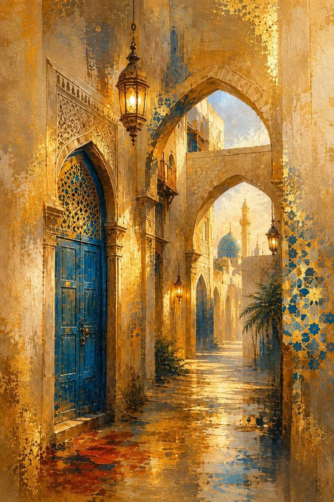
للوحة الفنية الكلاسيكية
فنان :--------
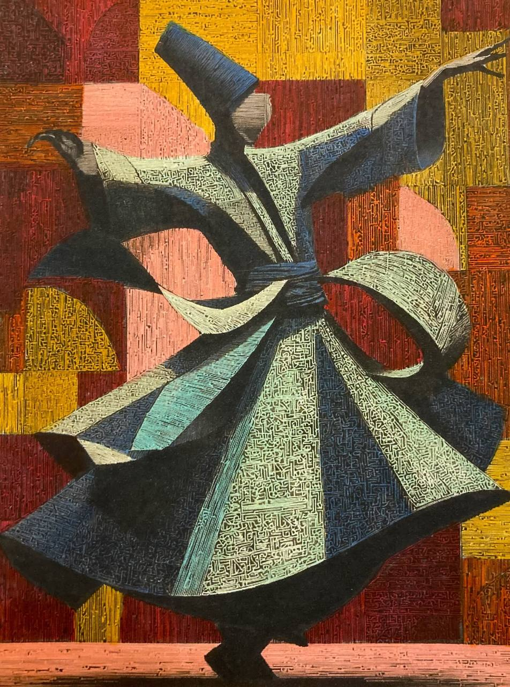
للوحة الفنية الكلاسيكية
فنان :--------
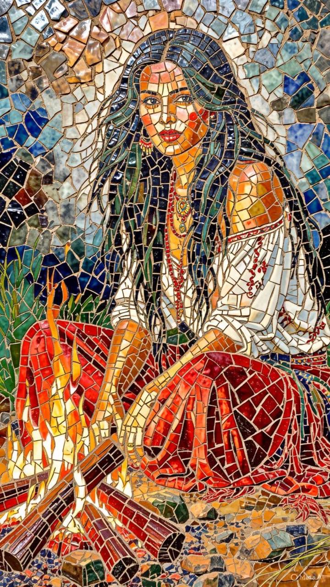
أسلوب الفسيفساء التراثي
فنان :--------
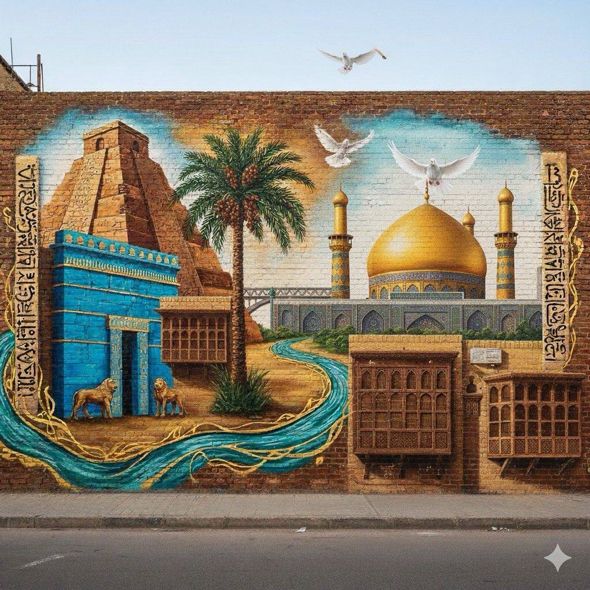
معالم بلاد الرافدين القديمة
فنان :--------
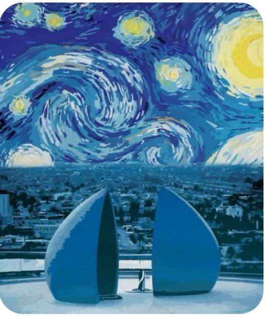
مدينة بغداد التاريخية
فنان :--------
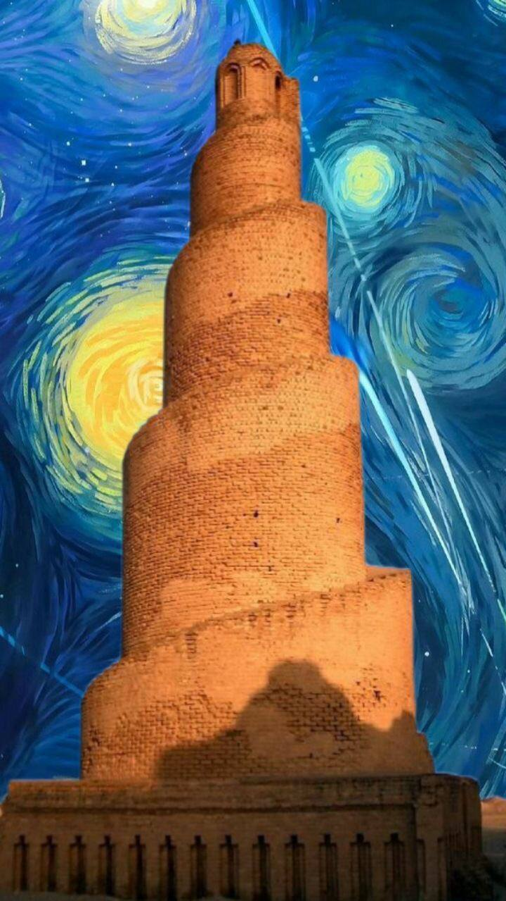
أسلوب سريالي وتعبيري
فنان :--------
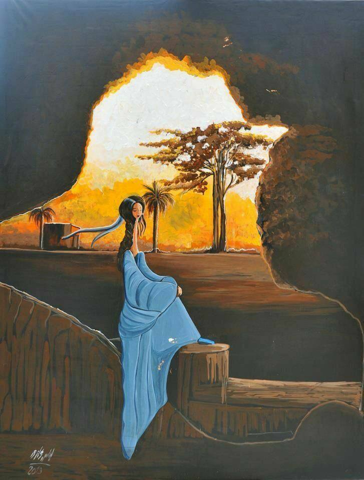
مشهداً شاعرياً وتراثياً
فنان :--------
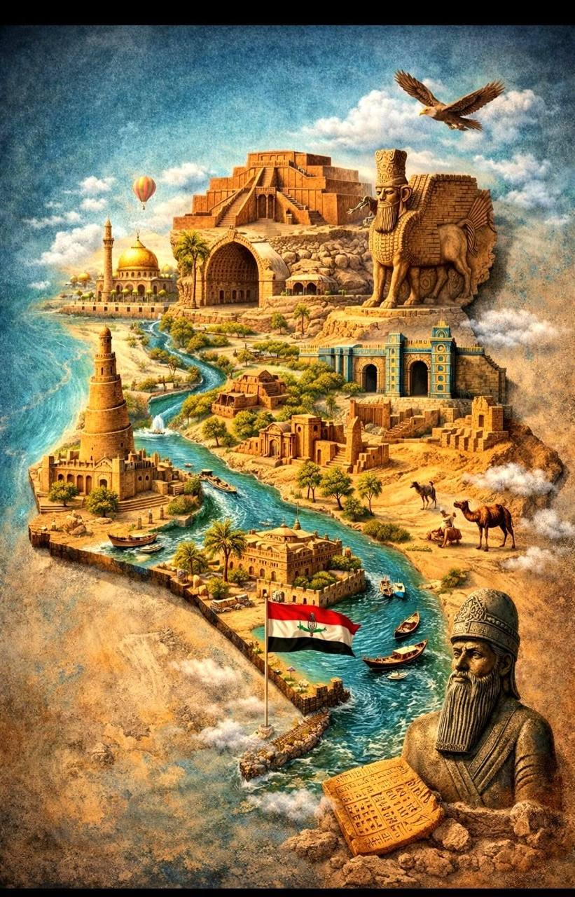
تجسد خريطة بانورامية غنية بالرموز الحضارية
فنان :--------
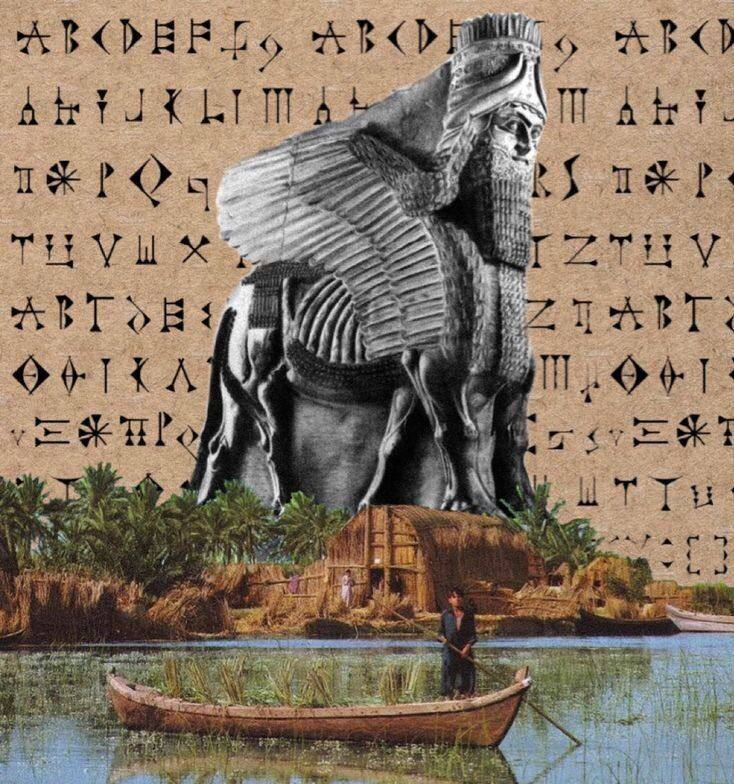
الرموز الرافدية العريقة
فنان :--------
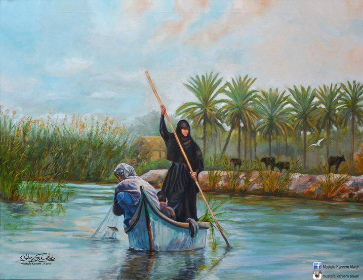
بيئة الأهوار العراقية الأصيلة
فنان :--------
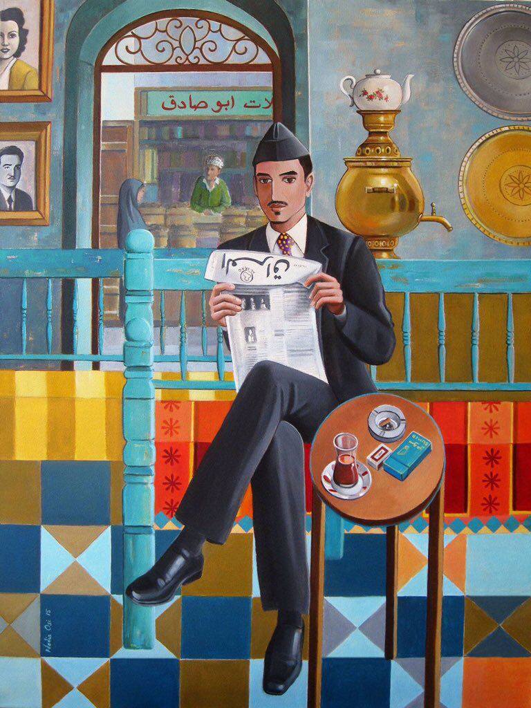
الحياة البغدادية الأصيلة
فنان :--------
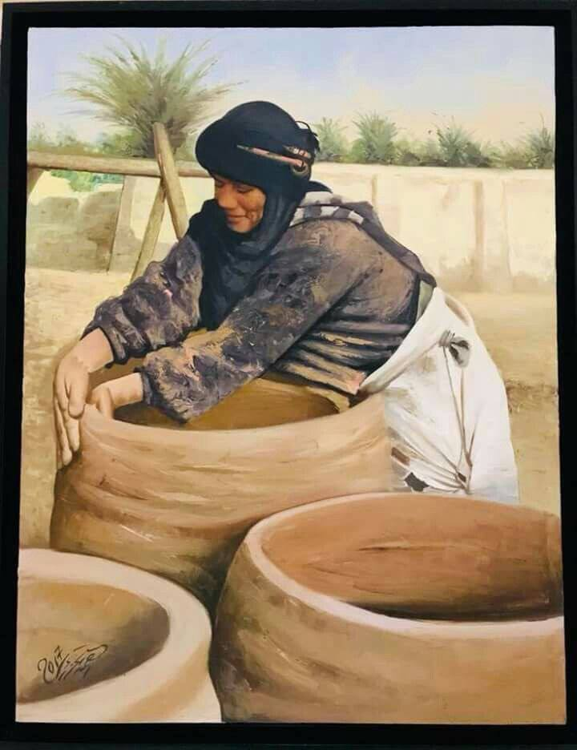
الحرف اليدوية التقليدية في الأهوار العراقية
فنان :--------
عنوان اللوحة
وصف العمل الفني...